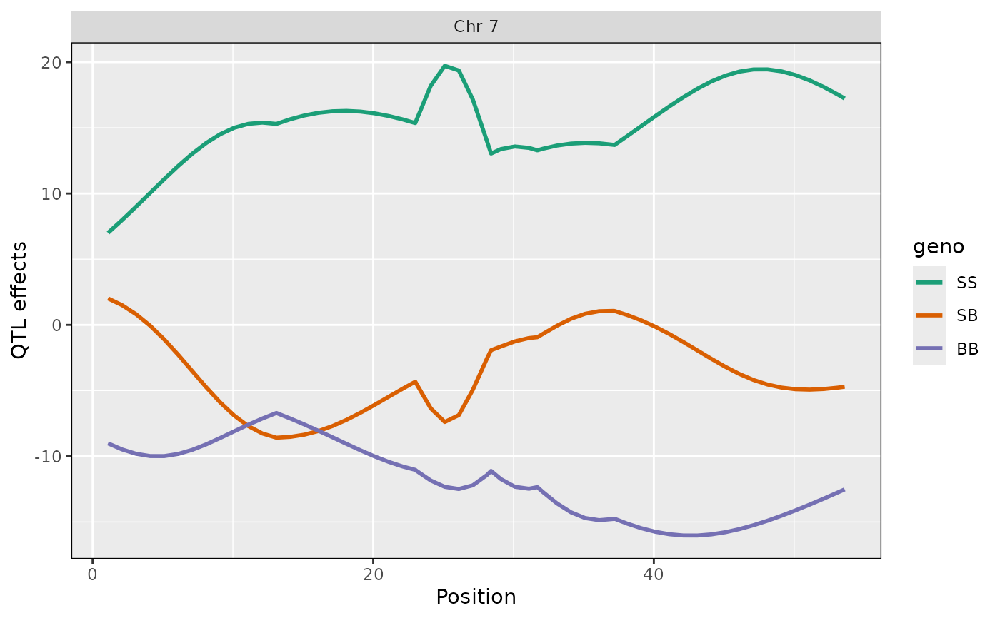

Plot estimated QTL effects along a chromosomes.
Usage
ggplot_coef(
object,
map,
columns = NULL,
col = NULL,
scan1_output = NULL,
gap = 25,
ylim = NULL,
bgcolor = "gray90",
altbgcolor = "gray85",
ylab = "QTL effects",
xlim = NULL,
...
)
ggplot_coefCC(object, map, colors = qtl2::CCcolors, ...)
# S3 method for class 'scan1coef'
autoplot(object, ...)Arguments
- object
Estimated QTL effects ("coefficients") as obtained from
scan1coef.- map
A list of vectors of marker positions, as produced by
insert_pseudomarkers.- columns
Vector of columns to plot
- col
Vector of colors, same length as
columns. If NULL, some default choices are made.- scan1_output
If provided, we make a two-panel plot with coefficients on top and LOD scores below. Should have just one LOD score column; if multiple, only the first is used.
- gap
Gap between chromosomes.
- ylim
y-axis limits. If
NULL, we use the range of the plotted coefficients.- bgcolor
Background color for the plot.
- altbgcolor
Background color for alternate chromosomes.
- ylab
y-axis label
- xlim
x-axis limits. If
NULL, we use the range of the plotted coefficients.- ...
Additional graphics parameters.
- colors
Colors to use for plotting.
Value
object of class ggplot.
Details
ggplot_coefCC() is the same as ggplot_coef(), but forcing
columns=1:8 and using the Collaborative Cross colors,
CCcolors.
Examples
# read data
iron <- qtl2::read_cross2(system.file("extdata", "iron.zip", package="qtl2"))
# insert pseudomarkers into map
map <- qtl2::insert_pseudomarkers(iron$gmap, step=1)
# calculate genotype probabilities
probs <- qtl2::calc_genoprob(iron, map, error_prob=0.002)
# grab phenotypes and covariates; ensure that covariates have names attribute
pheno <- iron$pheno[,1]
covar <- match(iron$covar$sex, c("f", "m")) # make numeric
names(covar) <- rownames(iron$covar)
# calculate coefficients for chromosome 7
coef <- qtl2::scan1coef(probs[,7], pheno, addcovar=covar)
# plot QTL effects
ggplot2::autoplot(coef, map[7], columns=1:3)
